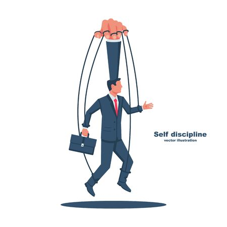

Urgente y NO Importante
 Relaciones frágiles o rotas
Impotencia al sentir que no tiene el control
Reputación de querer complacer a todos.
Falta de disciplina.
Sentir que es la alfombra de todos.
Le gusta quedar bien con los demás y dice si a todo. aquí podemos considerar que estas cosas son engañosas porque puede que sean urgentes, pero no siempre son importantes Esto deja como resultado que su concentración se deposita en plazos cortos, dejando como resultado administraciones de crisis al momento. Se torna un camaleón que las metas y los planes no valen nada; porque Claro siempre está pendiente de resolver lo que se va presentando. "Como diríamos a veces el golpe avisa."